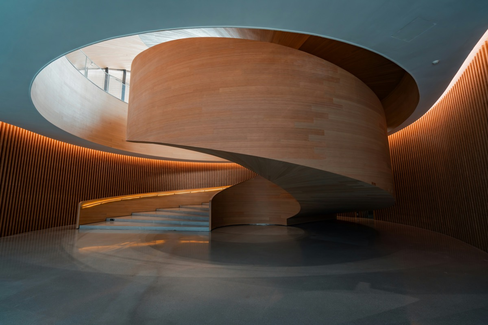
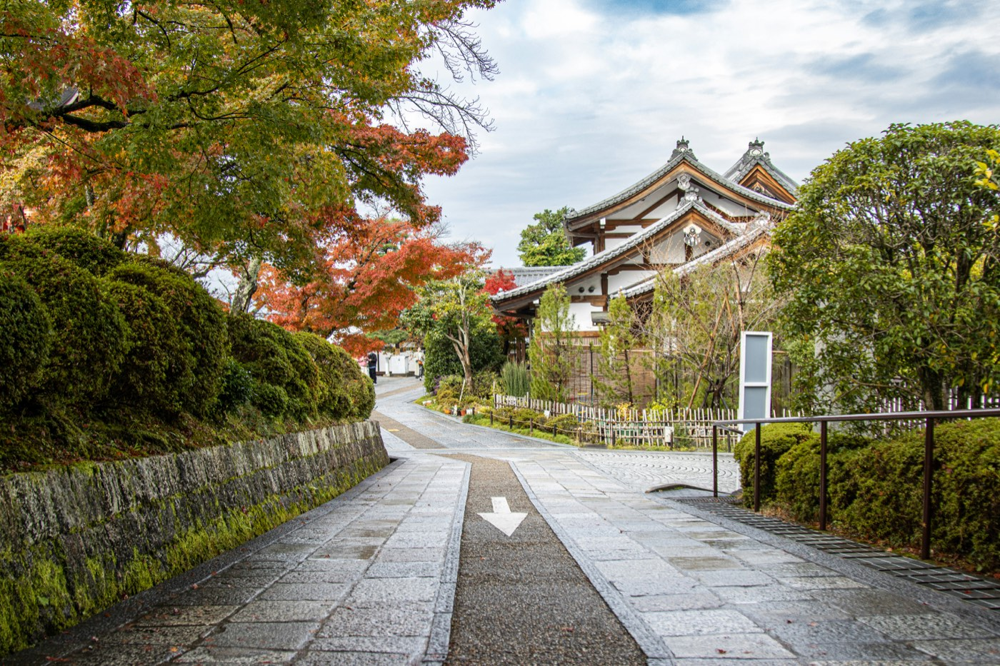
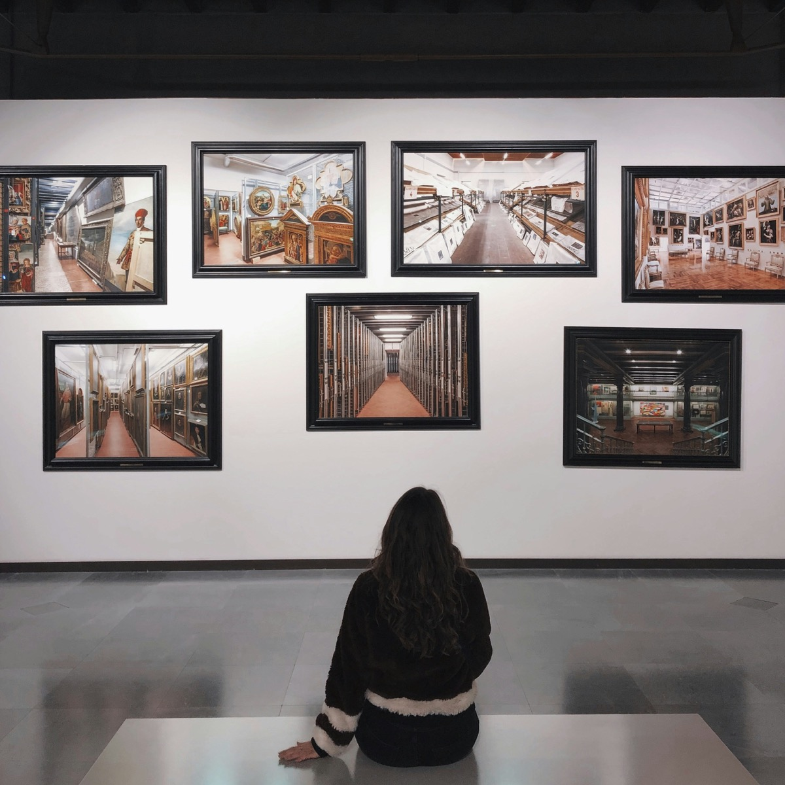
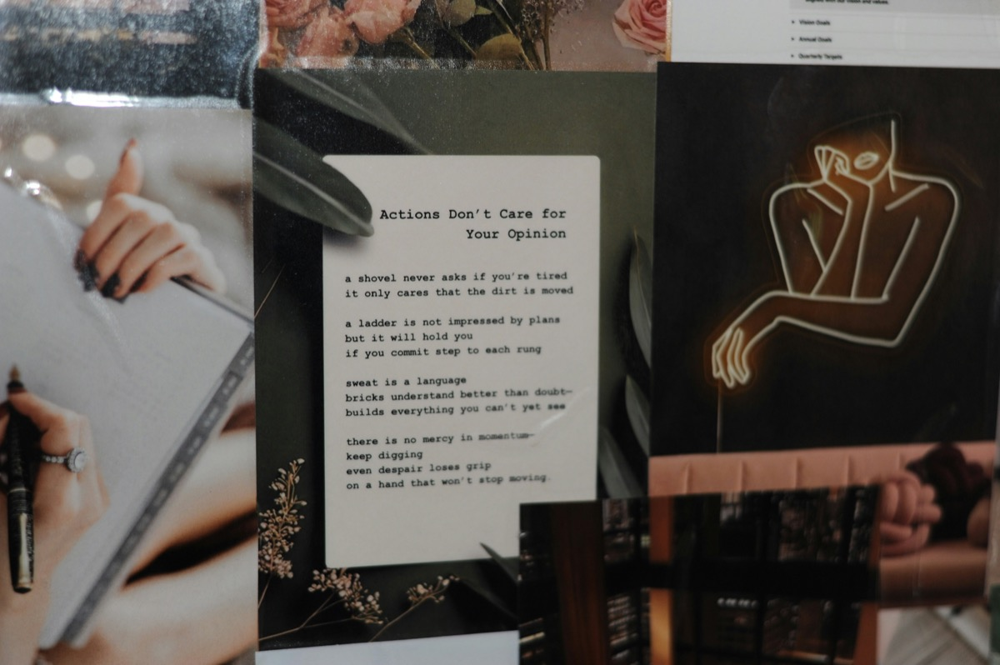
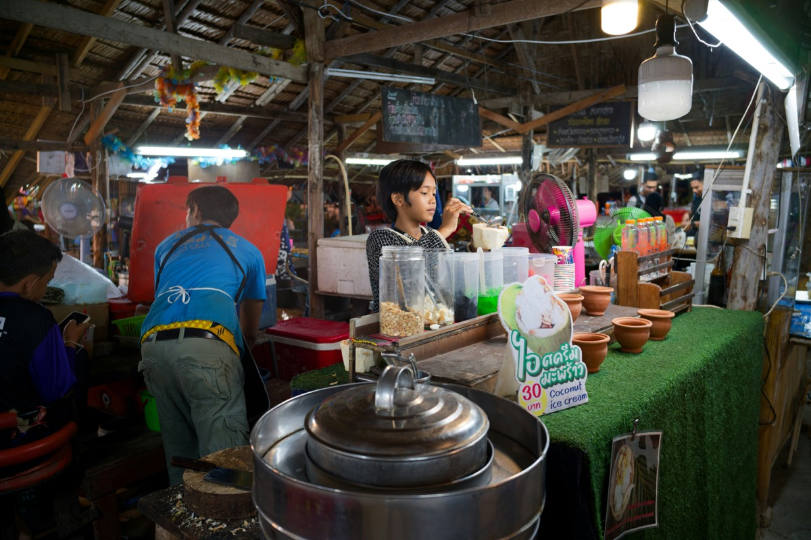

Design
Finding Beauty in Simplicity
Why thoughtful architecture reminds us that less can sometimes mean so much more.
Stories worth slowing down for.

Beyond the crowded temples and familiar tourist routes, a quieter Kyoto reveals itself to those willing to wander.
Read the storyDiscover thoughtful stories about the places we visit, the things we create, and the ideas that shape everyday life.
6 stories

Why thoughtful architecture reminds us that less can sometimes mean so much more.

Exploring the powerful connections between creativity, emotion, and human experience.
Rediscovering the small rituals that give everyday life a deeper sense of meaning.
A journey into the wilderness and the unexpected clarity that comes from disconnecting.

How everyday objects become meaningful through craftsmanship, design, and memory.

Discovering how food brings people together across languages, cultures, and borders.
“There is always something extraordinary hidden within the ordinary.”
— The Sunday Edit